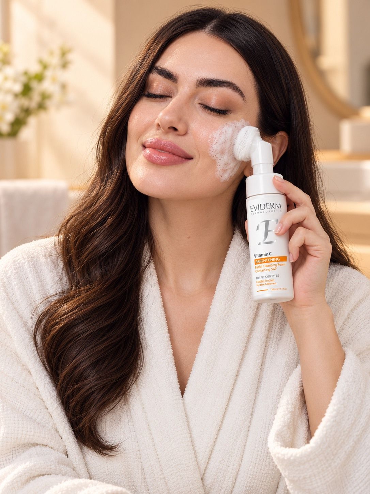

پاکسازی فصل اول
پاکیِ پوست،
آغازِ درخشش.
VITAMIN C · CLEANSING FOAM
فوم شستوشوی ویتامین C
یک شروع تازه برای پوست؛ فوم شستوشوی حاوی مشتق ویتامین C برای پاکسازی آلودگیهای روزانه و کمک به شفافیت پوست.
مراقبت تخصصی پوست و مو EVIDERM

01 / 06لحظهای برای خودتTHE CARE RITUAL
FOAM